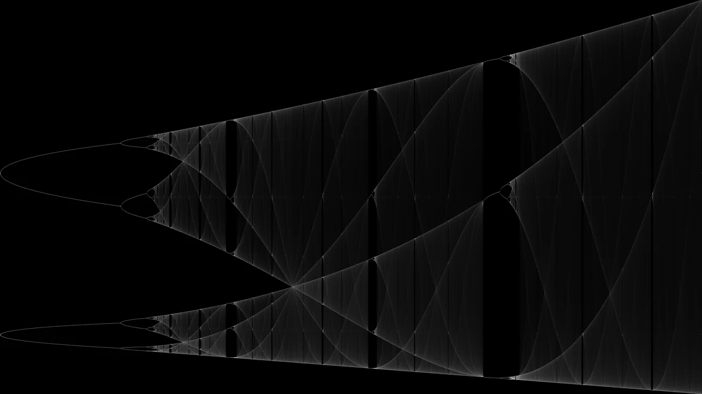
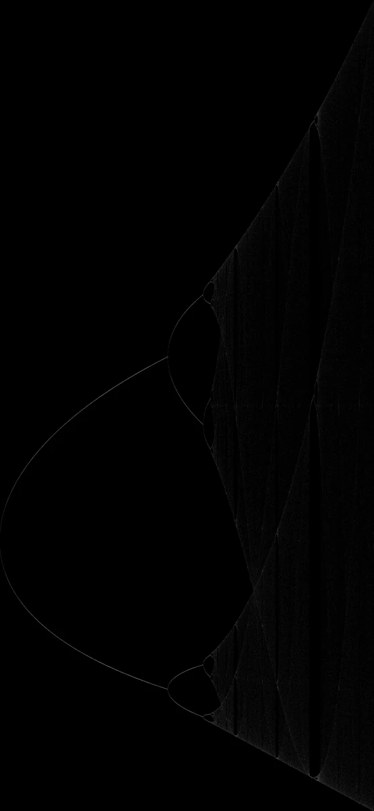
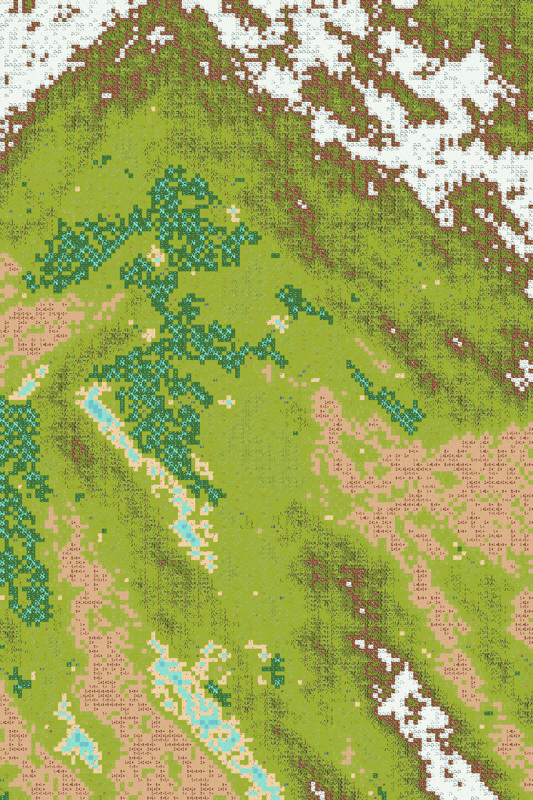
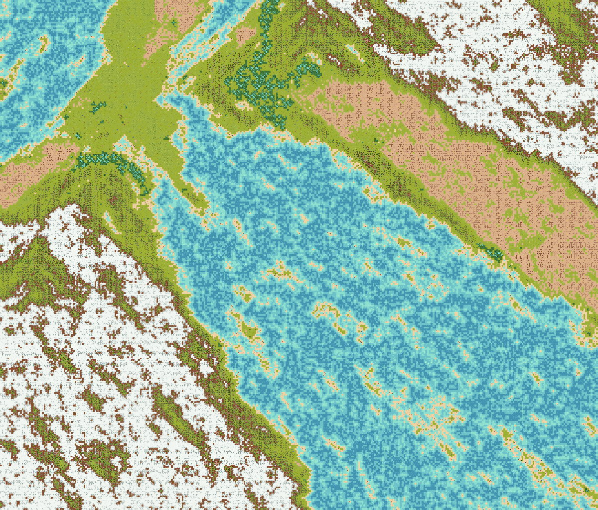
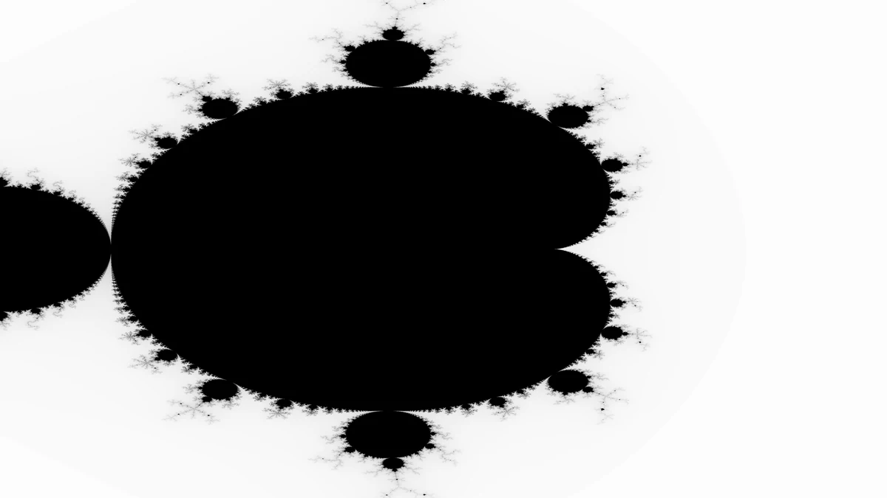

Experiments
Emergence, chaos and procedural generation. Small side projects that I found interesting enough to share.
01 — The logistic map
The bifurcation diagram of x → rx(1 − x) for r from 3.449 to 4.0. 2²⁵ values of r are iterated in parallel on the GPU in CUDA, and every visited point is accumulated as density into a 3840×2160 frame.
I wrote the first version at 16. The portrait crop has been my phone's lock screen ever since, and I have still never seen any image of it that resolves more detail.




02 — Wave function collapse
Maps for a text RPG, generated with wave function collapse over hand-tuned tilesets. Each tile refers to a probability mass function over its neighbours, the algorithm keeps collapsing the most constrained cell until the map settles into snow on the ridges, forest below them, desert and lakes.




03 — Fractals and gravity
Two C++ projects for learning the language: a Mandelbrot renderer, and an N-body gravity sandbox with OpenGL and GLFW including hand-written shaders and a sprite renderer.

